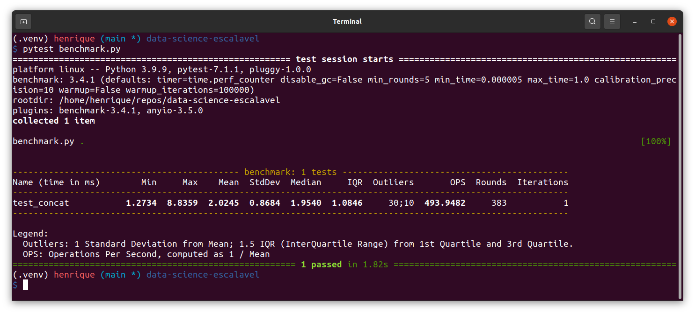
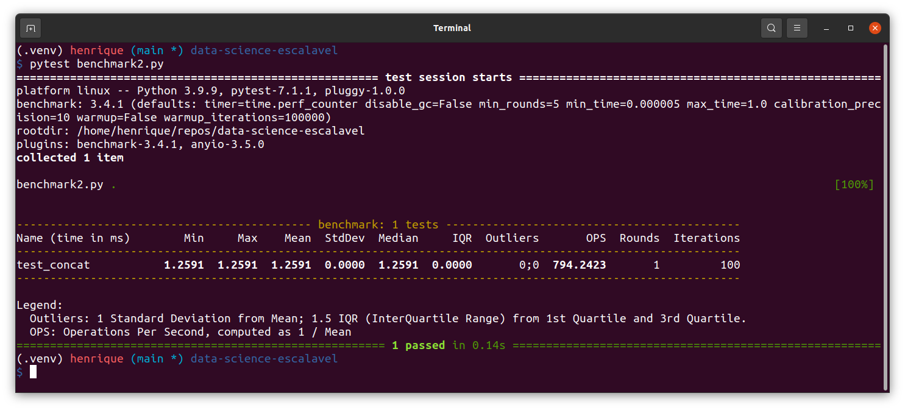
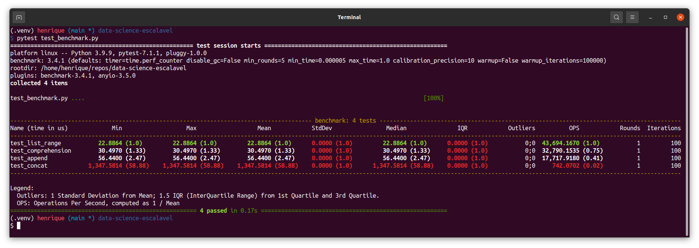

Quatro dicas úteis para de pytest
Contents
3.2. Quatro dicas úteis para de pytest¶
3.2.1. Motivação¶
Pytest é o framework ideal para escrever pequenos testes em Python. Nós cobrimos os benefícios de testes unitários e de como começar com pytest na seção anterior.
Nesta seção, iremos mostrar como:
Filtrar os avisos (warnings)
Imprimir a saída da função sendo testada.
Verificar a performance do seu código
Repetir o teste várias vezes
3.2.2. Filtrando os avisos (warnings)¶
É comum vermos avisos (warnings), informando que uma determinada funcionalidade será desativada no futuro, durante a execução dos testes com pytest. Estes avisos não parecem ser relevantes durante a fase de testes e chegam a ser um tanto quanto desagradáveis, pois poluem muito a tela, quando queremos só debugar o nosso código. Por sorte, é possível filtrar esses avisos quando usamos o pytest.
Vamos usar o exemplo da nossa seção anterior sobre pytest. Neste exemplo vamos testar se o TextBlob faz previsões acuradas dos sentimentos de um dado text. Se você ainda não conhece o TextBlob, você pode pesquisar mais sobre a ferramenta neste link.
Nota
Até o momento da tradução deste livro, a biblioteca textblob não apresenta suporte à lingua portuguesa. Portanto os exemplos serão em inglês.
# test_example.py
from textblob import TextBlob
def extract_sentiment(text: str):
'''Extrai um sentimento usando textblob.
Polaridade está no intervalo [-1, 1]'''
text = TextBlob(text)
return text.sentiment.polarity
def test_extract_sentiment():
# Tradução: Eu acredito que hoje será um grande dia
text = "I think today will be a great day"
sentiment = extract_sentiment(text)
assert sentiment > 0
Ao rodarmos esse script no terminal com:
$ pytest test_example.py
… nós veremos os avisos (warnings).
Para filtrar eses avisos, basta criar um arquivo pytest.ini no mesmo diretório em que rodamos o nosso script:
.
├── pytest.ini
└── test_example.py
E então inserir o conteúdo abaixo no arquivo pytest.ini criado.
[pytest]
addopts = -p no:warnings
Pronto! Agora é só executar os testes novamente. Nós veremos uma saída sem aqueles warnings!
3.2.3. Verificar a saída da função sendo testada¶
As vezes desejamos ver algum código intermediário antes do assert no teste. Por que não simplesmente imprimir essa saída intermediária?
Este pequeno ajuste nos permite desenvolver uma função que tenha uma saída conforme a desejada.
Por exemplo, nós podemos dar um print(text.sentiment) e saber exatamente o conteúdo de text.sentiment:
from textblob import TextBlob
def extract_sentiment(text: str):
'''Extrai um sentimento usando textblob.
Polaridade está no intervalo [-1, 1]'''
text = TextBlob(text)
print(text.sentiment)
return text.sentiment.polarity
def test_extract_sentiment():
text = "I think today will be a great day"
sentiment = extract_sentiment(text)
assert sentiment > 0
Apesar dos prints, quando rodamos pytest test_example.py não veremos nenhuma saída diferente. Para mostrar esse nosso print, precisamos incluir -s ao final do nosso comando:
$ pytest test_example.py -s
======================= 1 passed in 0.49s =======================
Para maiores informações sobre este e outros comandos, rode pytest -h que a lista de todos os comandos extras do pytest será exibida no terminal.
3.2.4. Repetindo um teste múltiplas vezes¶
As vezes o nosso desejo é rodar o mesmo teste 100 vezes para garantir reprodutibilidade, ou seja, que nossa função sempre funcione conforme esperado.
Um exemplo básico, nós descobrimos agora o método para combinar duas listas em Python.
l1 = [1,2,3]
l2 = [4,5,6]
l1.extend(l2)
l1
[1,2,3,4,5,6]
A partir da saída acima, parece que os valores da lista l2são sempre inseridos após os valores da lista l1. Mas será que a ordem é sempre essa com quaisquer pares de listas?
Para garantir que a ordem de inserção é preservada quando usamos o método extend, nós podemos criar duas listas aleatórias e testá-las 100 vezes. Se todos os testes passarem, teremos certeza de que o método funciona conforme o esperado.
Para repetir um determinado teste, instale pytest-repeat:
$ pip install pytest-repeat
Agora podemos usar pytest.mark.repeat(100) como um decorador no teste que gostaríamos de repetir.
import pytest
import random
def extend(l1,l2):
l1.extend(l2)
return l1
def test_extend():
l1 = [1,2,3]
l2 = [4,5,6]
res = extend(l1, l2)
assert res == [1,2,3,4,5,6]
@pytest.mark.repeat(100)
def test_extend_random():
'''Gera listas aleatórias e repete o teste 100 vezes.'''
l1 = []
l2 = []
for _ in range(0,3):
n = random.randint(1,10)
l1.append(n)
n = random.randint(1,10)
l2.append(n)
res = extend(l1,l2)
assert res[-(len(l2)):] == l2
$ pytest test_repeat.py
======================= 101 passed in 0.09s =======================
Maravilha. Agora temos certeza absoluta de que a ordem de inserção será sempre preservada usnado o método extend(), já que 101 testes rodaram sem falhas.
Se quiser ter ainda mais certeza, aumente o número de repetições para 1000 e veja o resultado. Você pode ler mais sobre o pytest-repeat aqui.
3.2.5. Medindo a performance do código¶
As vezes o nosso desejo é não só que a saída seja igual ao experado, mas também gostaríamos de comparar a performance entre duas funções diferentes.
A benchmark is a test that we can use to measure how fast our code is. Um benchmark é um teste que usamos para medir o quão rápido o código executa.
Por sorte, temos uma biblioteca chamada pytest-benchmark que permite realizar o benchmark do nosso código enquanto testamos as nossas funções com pytest!
Install pytest-benchmark with:
Vamos instalar o pytest-benchmark:
pip install pytest-benchmark
Vamos usar o exemplo deste artigo, escrito em inglês pela autora original do livro, sobre performance em código Python para mostrar como podemos usar o pytest-benchmark.
Aqui, vamos mensurar o quanto tempo demora para criar uma lista usando o método concat:
# benchmark.py
def concat(len_list=1000):
l = []
for i in range(len_list):
l = l + [i]
return l
def test_concat(benchmark):
res = benchmark(concat)

Conforme apresentado no gif acima, podemos obter várias estatísticas de performance como tempo mínimo, máximo, médio e desvio padrão do tempo de execução do método concat.
Podemos ainda inserir parâmetros para a função de teste e repetir o teste 100 vezes para coletar uma acurácia ainda melhor da performance do código.
# benchmark2.py
def concat(len_list=1000):
l = []
for i in range(len_list):
l = l + [i]
return l
def test_concat(benchmark):
len_list = 1000
res = benchmark.pedantic(concat, kwargs={'len_list': len_list}, iterations=100)
assert res == list(range(len_list))

Agora vamos usar o pytest-benchmark para comparar múltiplos métodos de criação de listas, todas elas com 1000 elementos (de 0 à 999).
# test_benchmark.py
def concat(len_list):
l = []
for i in range(len_list):
l = l + [i]
return l
def append(len_list):
l = []
for i in range(len_list):
l.append(i)
return l
def comprehension(len_list):
l = [i for i in range(len_list)]
return l
def list_range(len_list):
l = list(range(len_list))
return l
def test_concat(benchmark):
len_list = 1000
res = benchmark.pedantic(concat, kwargs={'len_list': len_list}, iterations=100)
assert res == list(range(len_list))
def test_append(benchmark):
len_list = 1000
res = benchmark.pedantic(append, kwargs={'len_list': len_list}, iterations=100)
assert res == list(range(len_list))
def test_comprehension(benchmark):
len_list = 1000
res = benchmark.pedantic(comprehension, kwargs={'len_list': len_list}, iterations=100)
assert res == list(range(len_list))
def test_list_range(benchmark):
len_list = 1000
res = benchmark.pedantic(list_range, kwargs={'len_list': len_list}, iterations=100)
assert res == list(range(len_list))
A saída é fácil de interpretar e ler!

Vimos que o método concat leva mais tempo do que os outros métodos. Mas quão mais longo ele é?
Podemos usar o parâmetro --benchmark-historgram para visualizar o resultado.
pytest test_benchmark.py --benchmark-histogram
Aviso de possível erro
Caso você obtenha o seguinte erro:
ImportError: (("No module named 'pygal'",), 'Please install pygal and pygaljs or pytest-benchmark[histogram]')
Basta reinstalar o pytest-benchmark acrescentando a extensão histogram desta forma:
pip install pytest-benchmark[histogram]
Ou usando o poetry:
poetry add pytest-benchmark[histogram]
Ou então instalar as bibliotecas sugeridas no erro acima: pygal e pygalsj

Uau! O gráfico mostra claramente que o método concat é muito mais lento que os outros!
Você pode aprender mais sobre o pytest-benchmark aqui.